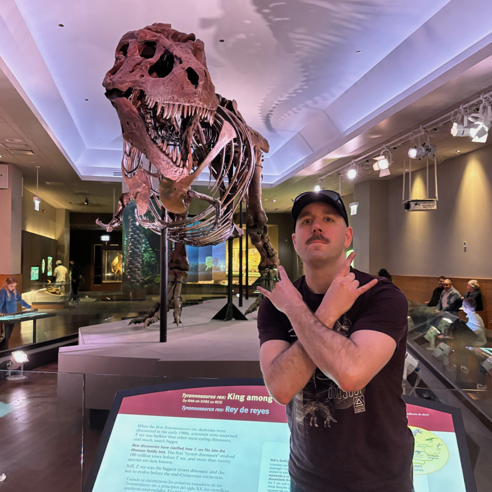
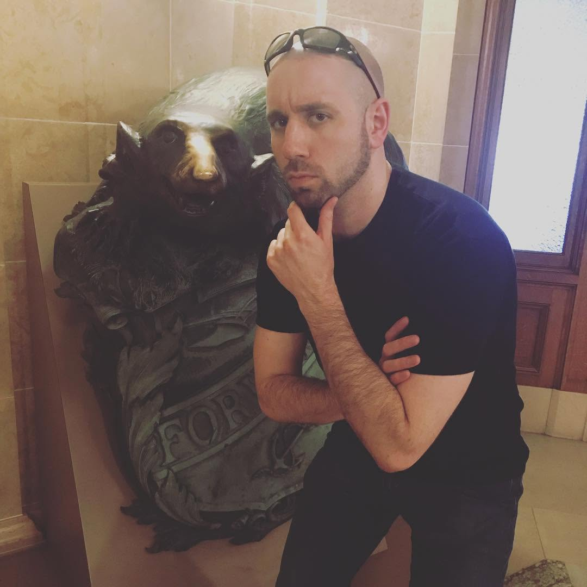
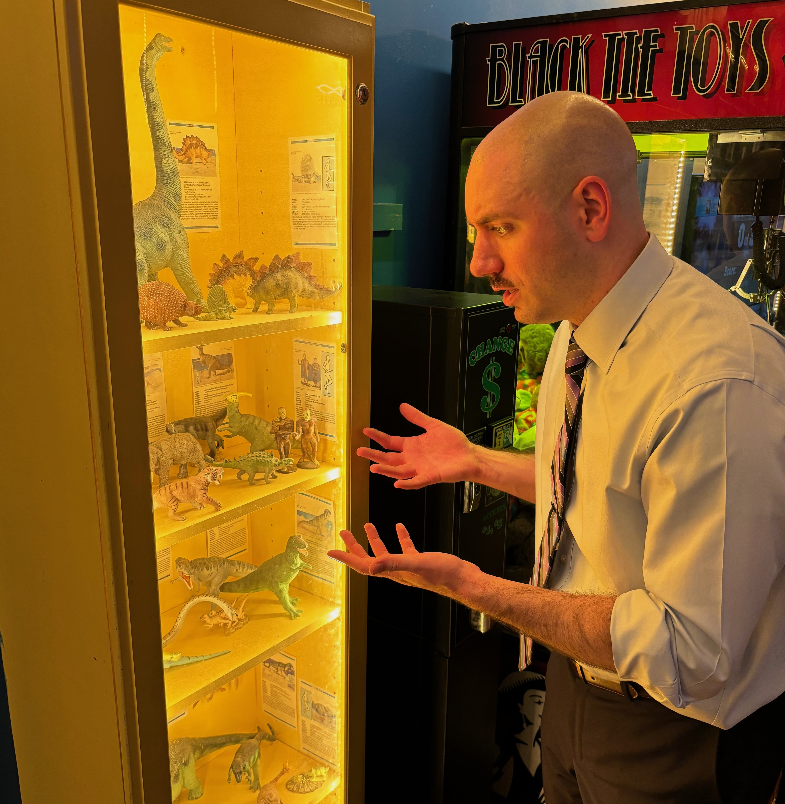
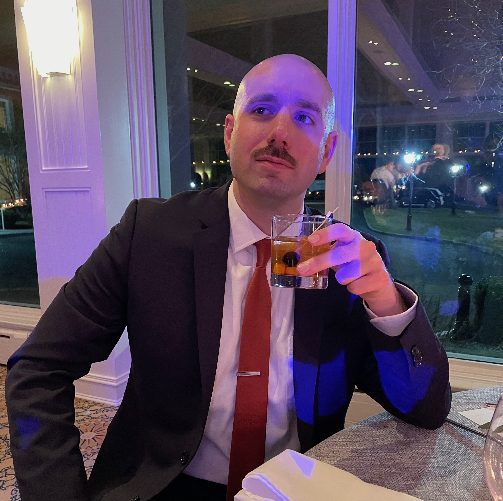

Intro
You found me! I'm a professional nerd and heavy metal fan who does web development. Keep scrolling to learn more about me, what makes me tick, and what I'm interested in!


Bio
I was born and raised in Des Moines, Iowa, except for a brief detour to the faraway land of Indianola, Iowa for college! Quite the journey...
I grew up learning way too much about dinosaurs, building Legos, and playing nerdy computer games. So pretty similar to my hobbies now,
execept now I know a lot more about tax codes and mortgages!
I spent a lot of my off-time in middle school and high school swimming competitively, and then lifeguarding in the summers.
Once I graduated I went to Simpson College and got a double major in Math and Computer Science, where I learned a lot
about embracing being myself, making lifelong friends, and even took a school trip to the UK and Ireland. Favorite
spot on that trip was the Natural History Museum in London. Again, dinosaurs...
After graduating I started job hunting and watched The Wire while I worked on my resume, until I started working for a local
dev shop building web applications for local businesses. I do most of of my work using libraries and frameworks like
Ruby on Rails, Stimulus JS, jQuery, Bootstrap, and AWS for hosting. I've been there ever since and now live in Urbandale.
Some of the technologies I've worked with!
- Ruby on Rails
- Stimulus JS
- jQuery
- Bootstrap
- AWS
- PostgreSQL
- Docker
- And open to learning more!


Hobbies
When I'm not working, I can frequently be seen patroning local comic shops and book stores, continuing to learn about dinosaurs, and
playing board games and video games like Pandemic, Arkham Horror, Wingspan, Elden Ring, and Cyberpunk 2077.
I recently got back into swimming as a workout, in addition to the occasional stair stepper or weightlifting session. Have to do something
to keep up with afternoons spent sitting at a board game table!
I've become a big reader in the last few years, mostly horror, sci-fi, and fantasy, and I'm always on the lookout for a new local book
store to browse. Some recent favorite reads include Salem's Lot by Stephen King, Incidents Around The House by Josh Malerman. A recent favorite
audiobook is the Witcher novels and the Dungeon Crawler Carl series - those and heavy metal are frequent background noise while I code.